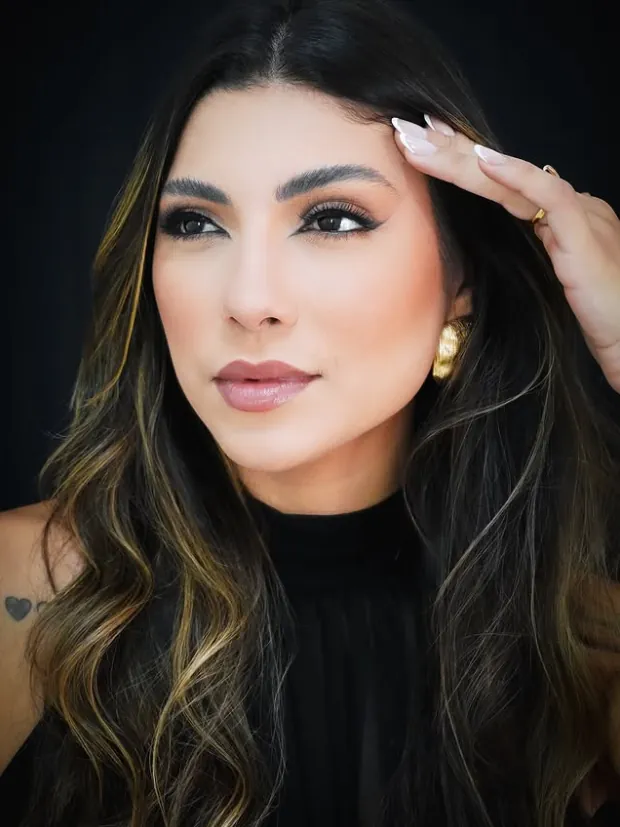
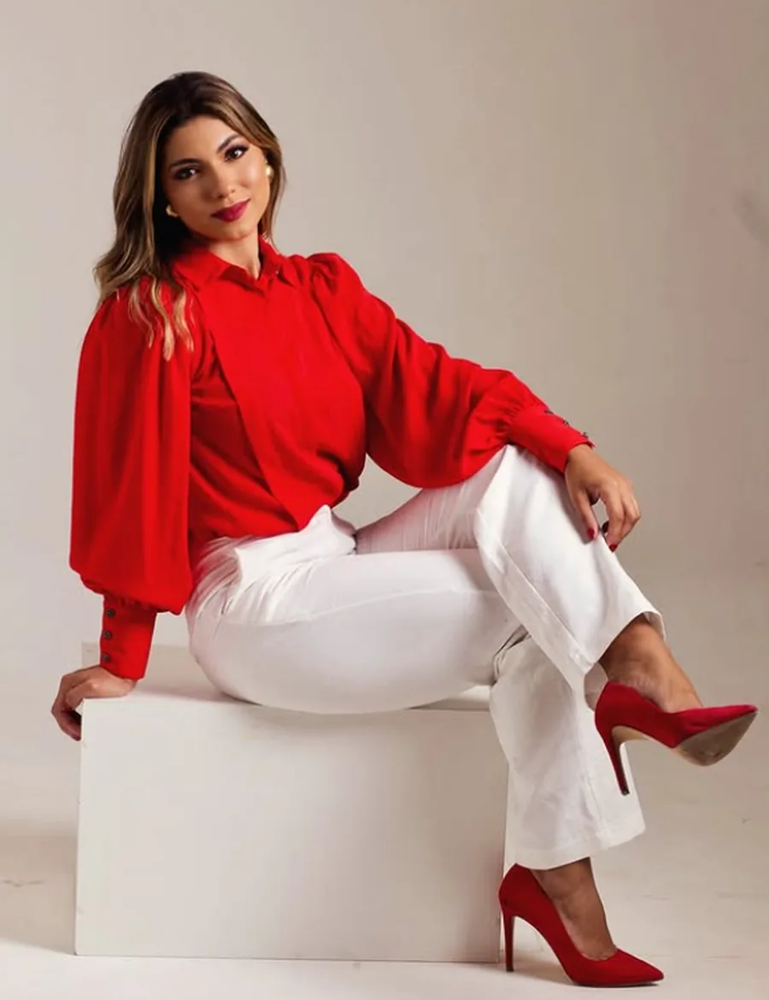
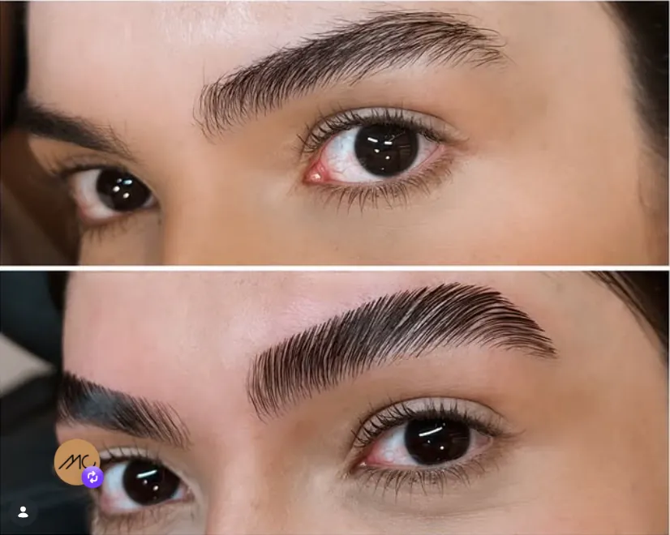
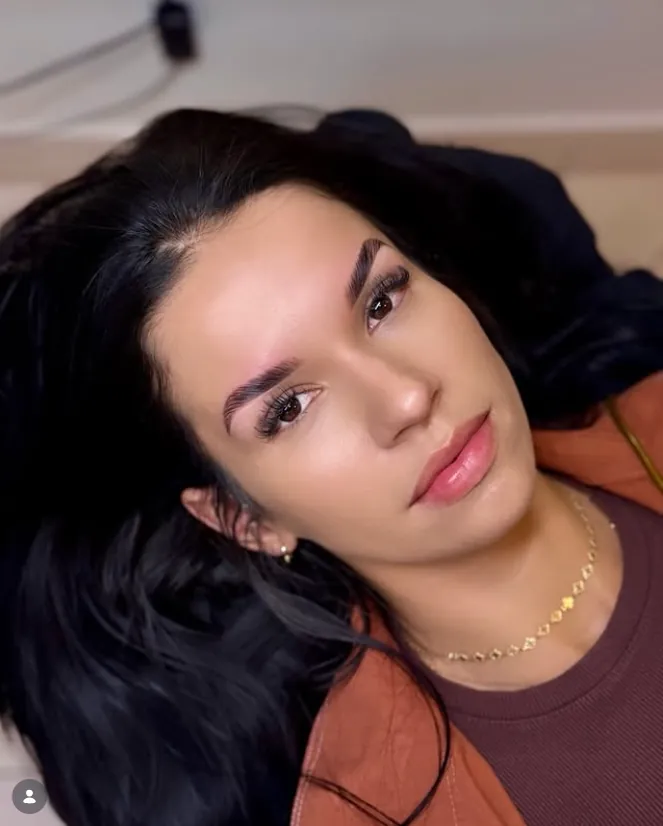
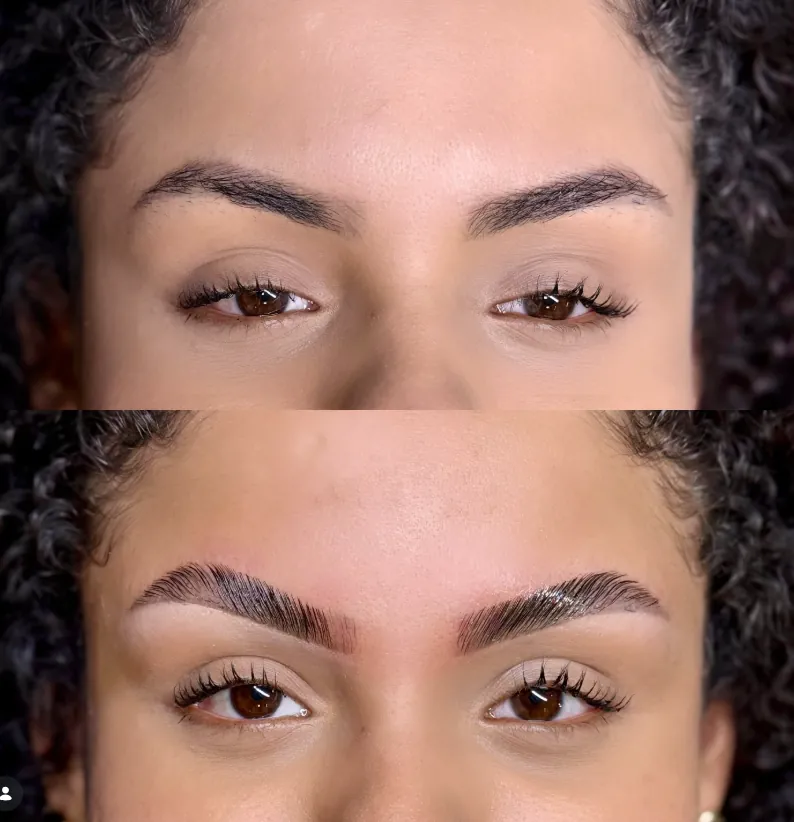

O desenho não era seu
Sobrancelha copiada de referência, sem levar em conta o formato do seu rosto, a sua expressão e o seu osso.
Clínica de estética · Teixeira de Freitas, BA
Sobrancelhas, cílios, maquiagem e remoção a laser executados com técnica, avaliação individual e o desenho certo para o seu rosto — nunca o mesmo traço para todo mundo.
Master certificada Beauty University Professora licenciada +3.000 procedimentos

Por que tanta gente desiste
Sobrancelha copiada de referência, sem levar em conta o formato do seu rosto, a sua expressão e o seu osso.
Fio removido a mais não cresce no dia seguinte. Sobra a franja, o lápis todo dia e a sensação de estar sempre corrigindo.
Preencher com maquiagem esconde por algumas horas. Falha por queda ou folículo enfraquecido pede avaliação e tratamento, não disfarce.
Micropigmentação marcada, laminação sem naturalidade, make pesada na foto. O receio é legítimo — e evitável com técnica certa.
Nenhum desses problemas se resolve com pressa.
Todos se resolvem com avaliação, técnica e o procedimento certo para o seu caso.
O que muda de verdade
Sobrancelha e olhar são a primeira coisa que a outra pessoa enxerga. Quando estão no lugar, muda a foto, muda a rotina e muda a forma como você se olha no espelho.
Cada design começa pela leitura da sua face: proporção, formato do osso, direção do fio e o resultado que você quer alcançar.
Com o desenho e a cor certos, a maquiagem diária vira opção, não obrigação. Você sai de casa pronta em menos tempo.
Resultado natural, que continua bonito na segunda-feira de manhã — sem parecer maquiado, sem parecer feito.
Do design de manutenção ao tratamento de crescimento, da produção de festa à remoção a laser. Sem precisar recomeçar em outro lugar.

Quem atende você
Especialista em sobrancelhas e maquiagem. Começou a carreira ainda morando na Flórida, nos Estados Unidos, e trouxe para Teixeira de Freitas uma formação construída em técnicas internacionais.
“O que me trouxe até aqui não foi sorte. Foi uma escolha.”
O que fazemos
Do design de manutenção ao tratamento de crescimento e à remoção a laser. Toque em qualquer procedimento para ver a ficha completa: o que é, quanto tempo dura e para quem é indicado.
Em dois toques
Responda duas perguntas rápidas e veja qual técnica resolve o que você quer resolver — já com a mensagem pronta para enviar no WhatsApp.
Trabalhos da clínica
Todas as imagens abaixo são de atendimentos publicados no Instagram da clínica. Nada de banco de imagens.






O que dizem
Perfeita
Stefanne D. · InstagramMuito lindaaaaa
Ana D. F. · InstagramLinda, linda, lindaa
Milena C. · InstagramEssa Norinha minha arrasa
Erlene M. · InstagramComentários publicados por clientes no perfil @mcbeautyclinic_.
Agenda limitada
Os horários da clínica são poucos e costumam fechar com antecedência. Se você já sabe o que quer fazer — ou ainda tem dúvida —, mande uma mensagem e a Mayara te orienta pessoalmente.
Segunda a sexta, 13h às 18h · Sábado, 8h às 14h
Para profissionais
Dois dias de imersão presencial com prática em modelos reais, certificação da Beauty University, kit completo para começar a atender e seis meses de suporte depois da formação. Para quem está começando do zero e para quem já atua e quer se atualizar.
Antes de agendar
Os valores são passados no WhatsApp, junto com a orientação sobre qual técnica faz sentido para o seu caso. Alguns procedimentos dependem de avaliação prévia, e tratar disso por mensagem evita que você pague por algo que não vai te entregar o resultado que procura.
Não é definitivo. O resultado dura de 4 a 6 semanas e a recomendação é refazer a cada 45 dias. Por não ser permanente, permite ajustar o desenho com frequência conforme o seu rosto e o seu gosto mudam.
Não. Nanofios é uma técnica fio a fio de alta precisão, aplicada de forma superficial na pele, com aparência mais natural. A duração é de 4 a 12 meses e há um retoque entre 30 e 40 dias após a primeira sessão.
Antes de iniciar é obrigatória uma avaliação com tricoscópio para verificar se o folículo está ativo, dormente ou morto. Se o folículo estiver morto, o tratamento não produz resultado — e a gente te diz isso antes de você investir. A quantidade de sessões é definida pela avaliação; o protocolo recomendado é o de 5 sessões, com cerca de 20 dias de intervalo.
Não. O procedimento curva e levanta os seus próprios cílios, sem implante de fios. O efeito dura de 4 a 6 semanas e, quando desaparece, basta refazer.
Atendemos peças de até 10 centímetros. O procedimento é feito no laser-D, o dia exclusivo da clínica para laser, divulgado no Instagram. O intervalo entre as sessões é de 30 a 60 dias, conforme o tamanho e a resposta da sua pele.
O atendimento é só com hora marcada. A clínica funciona de segunda a sexta, das 13h às 18h, e aos sábados das 8h às 14h. Como cada procedimento leva cerca de 50 minutos, a agenda é limitada.
Em Teixeira de Freitas, na Bahia. O endereço completo e o ponto de referência são enviados na confirmação do seu horário pelo WhatsApp.
Contato
Mande uma mensagem contando o que você quer fazer — ou o que te incomoda hoje. A Mayara responde pessoalmente e indica o procedimento adequado antes de qualquer agendamento.